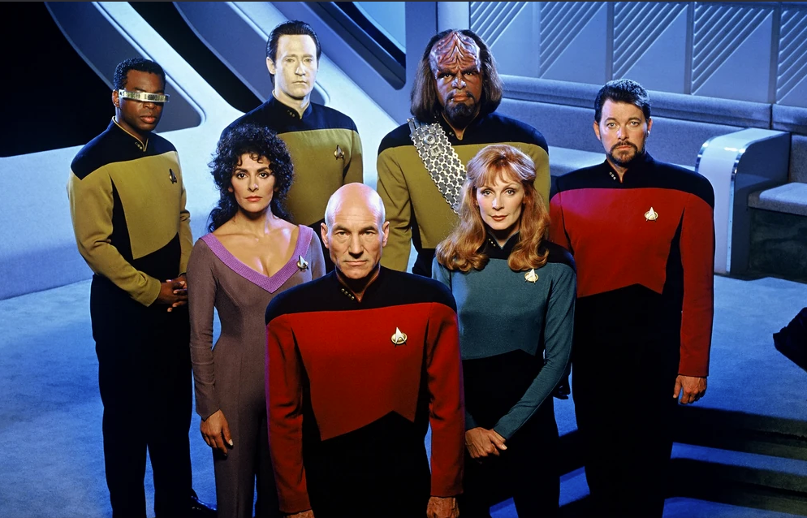
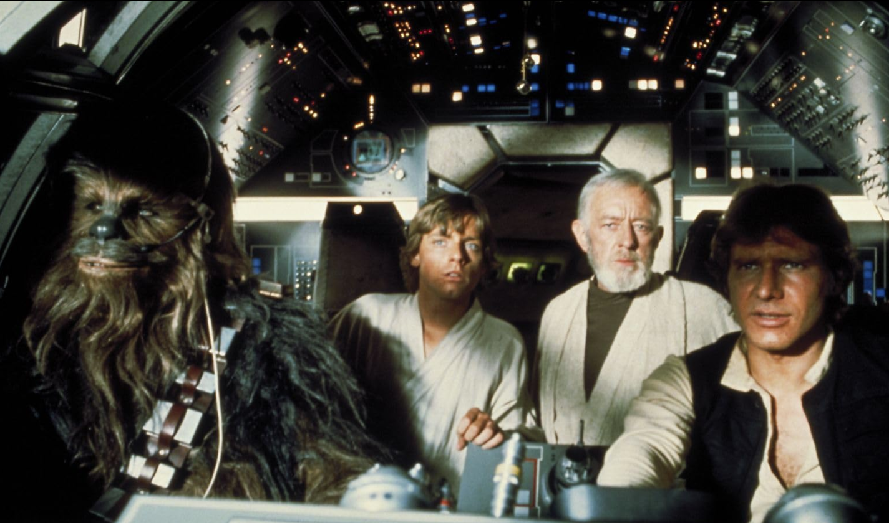

Many people think of them in the same breath - Star Trek V Star Wars - what's the difference? My Wife is one of them. They see a model space ship against a background of stars and think they're the same, but it's the same as saying "Wagon Train" and "lord of the Rings" are the same as they both have horses.
To Elaborate, we can check out the introduction to both.| Star Trek | Star Wars |
|---|---|
| Space, The final Frontier. These are the voyages of the starship enterprise. It's continuing Mission, to Explore Strange new worlds, to seek out new life and new civilisations, to Boldy go where no-one has gone before | A Long time ago, in a Galaxy Far, Far Away... |
Star Trek

Star Trek was concieved by Gene Roddenberry as a concept of what human civilisation would look like if we overcame our predjucies and greed and worked together for a united Earth. To Facilitate this, we encountered Aliens and found ways to commuicate and work together to form the united federation of planets, to work together to explore the Galaxy. Gene Roddenberry dubbed this almost as a western - "Wagon Train through the Stars" and it shows earth 300 years in the future. The cast and characters share the same common history as todays people and the tech is based on what was deemed achievable.
By the time Star-Trek The Next Generation started, The production crew had engaged with science Advisors to ensure that any technobabble could be explained with real physics.
Star Wars

Star Wars on the other hand was written by George Lucas to tell a specific political tale removed from reality. it is set in a different Galaxy Far far away so the physics are detached and though Humans exist, they do not share the same common history. Star wars tells tales of mystical warrior wizards (Jedi) and their Evil counterparts (The Emperor, Darth Vader). It is more closely related to lord of the rings or Game of thrones with a fabricated universe, backstory and only is set in space as a setting.
Fans have attempted to provide scientific plausability behind the technology, from the blasters to the Light-Sabers but they are based on fantasy, though through much novels, movies and websites over the 50 years since it debut'ed have set a rich and well developed canon.